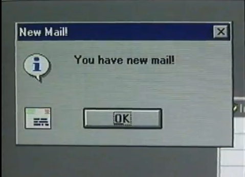
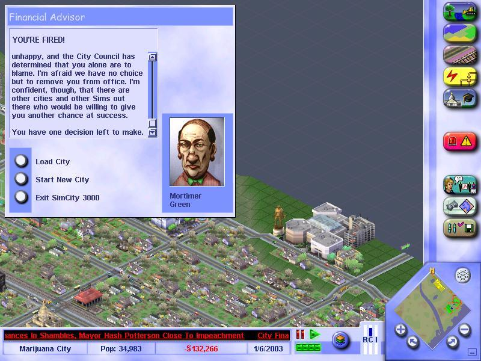
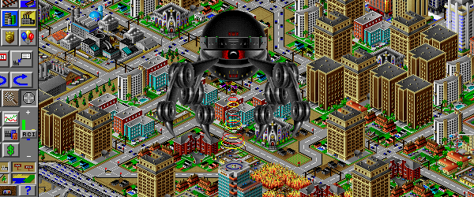
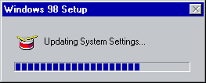

What marvellous machines!


{kind=link}
dang 98nt is on a roll right now
What marvellous machines!

Let the Halloween festivities begin.
Bill’s best bits: Bill and Steve Ballmer “Night at the Roxbury”
— Happy Birthday, Bill :) —
This wonderful person tweaked some SC2K music. Enjoy.
Fun times with Windows 95.

“STOP EVERYTHING! I HAVE MAIL!”

Oh alright, you talked me into it.

I went on a Trade Me/eBay shopping spree for old Windows stuff a few days ago, and this book arrived this afternoon.
It has begun.
I tried to scroll past this. I really did.

my blogging station
BEAT THAT
DONT DISRESPECT YOUR ELDERS DANGIT!!!
I spent far too much of my childhood on The Sims.
Well, there’s just one thing…
That is bad and clever at the same time.

Who wants to learn about the Internet on VHS?
And here’s the REAL game-changer…

This has only happened to me once, back when I had just started playing SimCity 3000. I’m please to report I’ve never gone back.


im absolutely amazed. fascinated
BE EXCITED.
Ah, the nostalgia of this intro video for SimCity 3000 Unlimited.
It was the summer of 2001. I had recently gotten my first computer, an IBM, and the only game I had played on it was the pinball game that came with Windows ME. I went to Wal-Mart, and happened on a copy of this hame called “SimCity 3000 Unlimited”. Looking at the box, I was mesmerized by what I saw. I bought it, and eagerly opened the box when I got home. The very first time I got that game installed and started it up, this video played and I got really excited because I thought the gameplay itself looked like that, with the “awesome 3D graphics” and the street-level interactivity, despite what some of the images on theb ack of the box showed… I was disappointed when I finally did load up a city and it was just a fixed isometric 2D view with gameplay that was nothing like the intro video.
And then for the first week or more of trying to play the game, I didn’t actually know how to use the zoning features and city services, so I kept trying to lay out streets and just plop landmarks and reward buildings, then they kept showing they had no power, and I kept waiting for the city to grow, and I was just clueless. But then finally I figured out how to use the zones and whatnot through a tutorial town, and it was just the most amazing thing to me at the time. New buildings were popping up in the zones, some shown with “under construction” versions before the finished building popped up, and I thought it was the neatest thing for some reason. And the cars and people on the streets, I used to watch them moving about with fascination.
Then, I discovered disasters. I must have spent hours building cities, then another hour just destroying it with one tornado, riot, and earthquake after another. My favorite means of destruction was by fire.
Another wonderful aspect of SimCity 3000 Unlimited was the music. It was the soundtrack of my life for a while, and I still love to listen to some of it now and then. Eventually I got a little tired of SimCity 3000 and played other games, like The Sims, which quickly became my new addiction. But then…
In 2003 I heard of Simcity 4. Again, the first I saw of it was a trailer that looked like this:
Again, I thought that’s how the game would look. But naturally, it ended up being a fixed semi-3D trimetric projection. Better than SC3k’s 2D isometric graphics, though, and much more realistic-looking. Still, I was disappointed it wasn’t something I could really get down to street level with.
That didn’t matter, though, because the game was still awesome, even more so than SimCity 3000. For the most part, of course, it was a lot like the previous game, but it had lots of nice new features, chief among them better road options, a region to build and connect cities in, and some neat new disasters, including a volcano.
Oh, how I loved the volcanoes. Of course I was also disappointed to find that volcanoes in the game did not produce widespread lava flows as was shown in pre-release screenshots. There are lots of disappointments like that when it comes to video games, it seems. Still, it didn’t stop me from killing thousands of my virtual citizens with quickly-rising mountains and lava flows.
I also loved the traffic feature of the game, especially after the Rush Hour expansion pack. Not only was there a large variety of vehicles and they were in 3D, but you could drive them! You could also crash them. You could run cars off the road, or derail your trains, it was funtastic…
After a while I got tired of Simcity 4, too, particularly after games like The Sims 2 and, much later, The sims 3 came out. Then, in 2006, a game called “City Life”, made by a studio that was not Maxis/EA and had no affiliation with the Simcity brand, was released…
And guess what? Finally, the game was in full 3D, and you could move the camera all sorts of ways and get down to street level!
While City Life was fun for a while, it also got old more quickly. There were too many repetitive buildings, its class system was annoying and unrealistic, and it didn’t even have disasters, aside from perhaps some fires. And so, I found myself playing Simcity 4 again for a bit.
Then, in 2007, Simcity Societies happened.
Finally, a “Simcity” game that was in full 3D!
That was about as good as it got, though, because everything else about it, from the game play and aesthetics to the building and transportation options were horrible, and because of that I will speak no more of Simcity Societies. Some of us don’t even count it among Simcity games…
In 2009, the people who brought us “City Life” released a new game: Cities XL…
Cities XL was basically a much better version of City Life. Its graphics were nicer, and again, you could get down to street level and look about. However, there was still not much to see, a fairly limited selection of buildings, and no disasters. The game also had a memory leak problem that was never fixed.
When Cities XL was first released, it also had an online multi-player feature in which people could go to “planets” where they could start cities with other people playing the same planet, trade with each other, and visit each other’s cities. Unfortunately, this didn’t go over well, and the feature was axed soon after and the game was made into single-player only. This is a lesson that the next version of Simcity would fail to take into account. Updated versions of Cities XL were also released in 2010 and 2011, but they didn’t have too much more, and the memory leak still went unfixed, and the studio that originally created the game went defunct.
Finally, in early 2013 Maxis, the creators of the original Simcity games, brought us Simcity, or “Simcity 5” as some call it.
And you know what? Despite the game’s terrible launch in which hardly anyone could play it due to its always-online requirement, the overall boredom of the whole online play thing (city building games are NOT good for multi-player!), and worst of all its pathetically limited city size, Simcity 5 actually looked pretty great, and was fun to play for a while.
While it can look a bit cartoonish at times, Simcity 5 really can look beautiful, particularly from afar…
…But also up close. It’s fun to watch the various activities going on about the city, and they made sure to have plenty going on.
It’s also fun to watch the city grow. You lay down zones, lots are plotted, people arrive in trucks, the buildings start rising in construction scaffolding, then they’re topped off and “finished” to appear vacated, then people arrive in moving vans and the buildings are occupied. It’s a far cry from the days of Simcity 3000. The world of Simcity 5 is sometimes exquisitely detailed, and if you’re a sucker for detail, that could occasionally make up for some of the more lacking game play features. Cities in Simcity 5 also look beautiful at night.
One of the other annoying things about Simcity 5, though, is that while the disasters could be fun…
…you have to unlock them first by reaching various goals, and you cannot save your city, destroy it, then re-load the unharmed version, because cities are constantly being saved to the servers. It’s a major case of “when one great thing comes, another goes”.
Still, going back to that day in the summer of 2001 when I first booted up SimCity 3000 Unlimited, I never would have expected we’d have anything like Simcity 5. Despite my initial disappointment at the difference between that intro video and the actual game, what I saw in SimCity 3000 was amazing to me. After years of doing nothing but draw random crap in Windows Paint and playing Oregon Trail on school computers (using Paint was always a rare treat, now I almost never use it), Simcity 3000 was a massive change of pace. Now that we have Simcity 5, and much of what I had originally expected when watching that intro video, it makes me wonder what the future of city-building games, and all games, might be. I just hope some major improvements will eventually be made to Simcity 5, and that in the future we’ll see an even better city-building game in the works.
But even then, I still cannot help but boot up SimCity 3000 and start a few disasters or bask in its music. After twelve years and five more city-building games, I still get a wonderfully nostalgic feeling similar to the feeling I had when I first played Simcity 3000 Unlimited. Only this time I know I need zones and utlities to make my city grow.
What’s this silly idea about getting sick of SimCity?


SimCity 3000 appreciation post
(nicked all these pictures from Google Images: I know at least 2 of these are from Flickr and MobyGames)
SimCity 3000 was the best SimCity ever, period. It was hilarious, had depth, and little touches like traffic on the left and the d/m/yyyy year style. Good times.
The hours I’ve burnt on this…
sim city 2000 was and is the best city planning game of all time
SimCity 2000 is a marvellous game, and the best thing is it’ll run on anything!


I think the fact that I still play SimCity 2000, SimCity 3000 and SimCity 4 over ten years after I got them is testimony to how great they are.

Two things I saw today in Goodwill but didn’t have my camera with me: a HD-DVD player and a shrinkwrapped box of Windows 95.
Why do I never find anything like that?
my blogging station
If you have one of these, you slay the bitches.

It’s rare for an operating system to reach the same level of perfection as Windows 98.
Ah, Windows 95, you’re dearly missed.
50 63 posts!
Windows is wonderful.

Here’s where the fun really starts!


Windows 95 is just that damn big an event.

This may take some time.
I get a kick out of installing classic Windows, especially 98 and Me.

And they still look much the same today!
dang 98nt is on a roll right now

windows literally high as fuck
That’s my kind of flag!

To think this was a hard drive 15 years ago.

collection of aol discs in the hobby hall
Think how many hours of free Internet you’ll get out of this!


Oh how I miss these little gems.

Four-Byte Burger ▰ From AmigaWorld (Premiere) ☯85SEP | Illustration by Jack Haeger
Delicious and with only 6kb of calories!

Windows 98 is brawny as all hell.

I found my childhood in an old box.

Me: 16 bits / You: 256 colours
Nostalgia

Click here to begin.
test area
transparent desktop
Take a look at this!